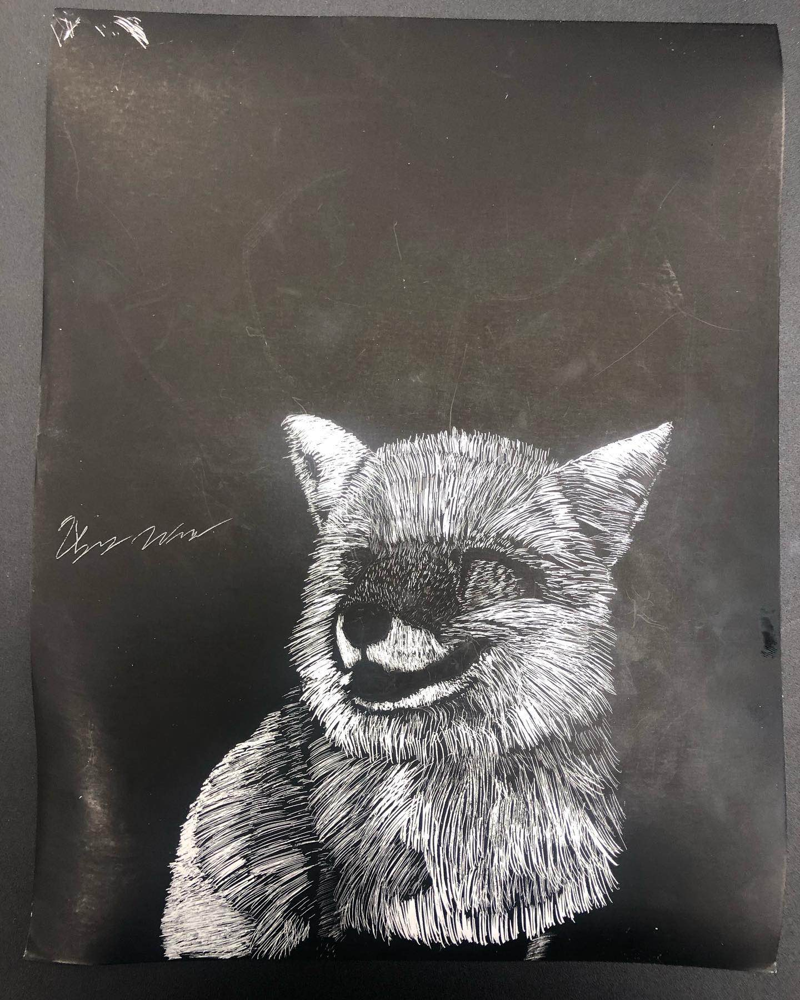

This is a small display of my portrait work. As I am still building my own art portfolio, only a select few are on display. If you wish to see more, pleas check out my Instagram page!
An art project done for an art class, the purpose behind the artwork was to utilize a piece of tonal paper to bring out the hues of skin color. Further, we were introduced to the concept of a tracing via gridlines on both the paper and our reference image. The art piece was done through with charcoal for outlining the model and shading. White chalk was used to bring out the highlights and lighting on specific elements of the model. This being a final, most of my time was centered around trying to make the piece perfect. The final product was rather a surprise, espeically as the piece started to come together. The progress and reference may be found on my Instagram page.
Another art project, the purpose behind this piece was to familiarzie ourselves with charcoal and an art element my art instructor referred to as subtractive. The idea behind it was to cover the entire piece in charcoal and utilizng an eraser and cloth, gradually pick away at the charcoal to allow the piece to come together. This was an interesting project as initially, my issues in any portrait is spacing eyes correctly. My first attempt came out rather off which may be seen when referencing my Instagram post where I post the progress of the piece but also included my first attempt. Further, hair is another issue I struggle with. So, to be able to simulate hair while also in this format was an interesting challenge.
One of my final art projects on top of my tonal art piece, the piece was to be done using a scratch board to bring together the piece. Unfortunately, my first run came odd. Even looking at it now, I still have no clue what the vision was in my first attempt, which just as the subtractive piece, the first attempt may be viewed in my Instagram page. So, this project was set on the back burner while I placed my focus on the tonal art piece. In returning to it, I came back with more of an understanding in simulating elements such as hair, and with a fox's fur, there is a lot of hair. This is by far one of my most improved works.
